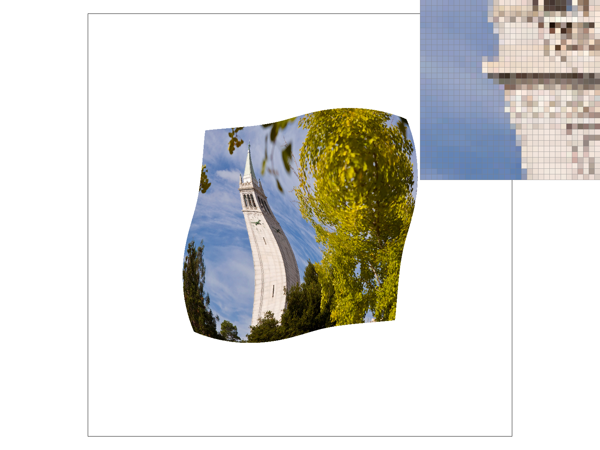
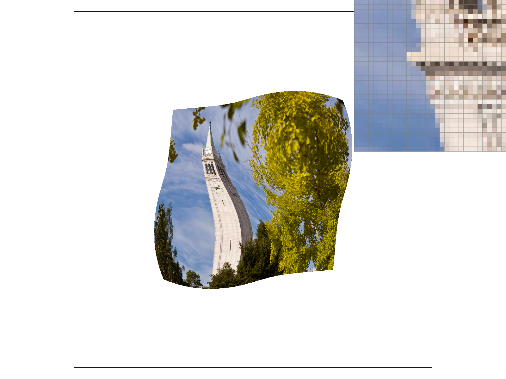
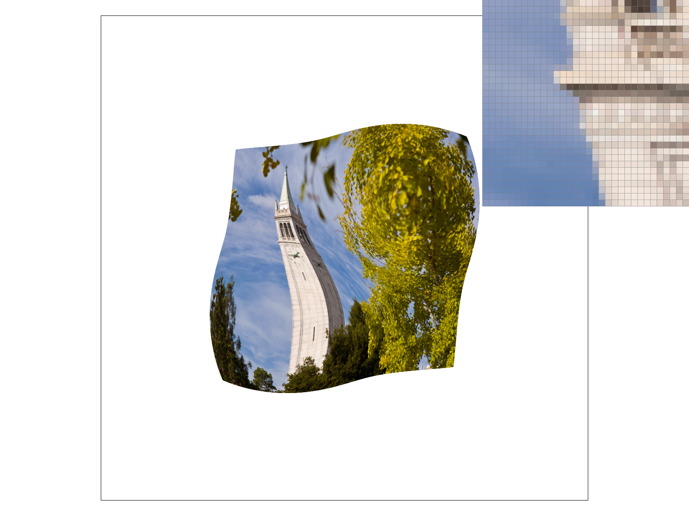

CS184/284A Spring 2025 Homework 1 Write-Up
Link to webpage: (TODO) https://cal-cs184-student.github.io/hw-webpages-ilovethomas/
Link to GitHub repository: (TODO) https://github.com/cal-cs184-student/sp25-hw1-biancano/tree/master

Overview
In this proiect, we are implementing a basic rasterizer. This program is able to parse an SVG file and take the convert the polygons to triangles. The polygons are then converted into triangles which are rasterized by supersampling at a user specified rate. The triangles can either be a single color, an interpolated color, or mapped to a texture file.Task 1: Drawing Single-Color Triangles
For the basic implementation of rasterization, we found the bounding box by finding the min and max of both the x and y coordinates of the triangle. Thus, the bounding box is confined to \(\texttt{min}(x_0,x_1,x_2) \leq x \leq \texttt{max}(x_0,x_1,x_2)\) and \(\texttt{min}(y_0,y_1,y_2) \leq y \leq \texttt{max}(y_0,y_1,y_2)\). I then iterated through each pixel in the bounding box and implemented 3 line tests to determine whether to color the pixel or not. This worked, as seen inbasic/test4.svg:

|
Task 2: Antialiasing by Supersampling
To implement supersampling, we first had to resizeframebuffer. For example, to rasterize an image with a display size of \(1000\times 1000\), and a sampling rate of \(16\) samples per pixel, the new framebuffer would need to be \(1000\cdot \sqrt{16}\times 1000\cdot \sqrt{16}=4000\times 4000\). This was done in RasterizerImp::RasterizerImp(), RasterizerImp::set_framebuffer_target(). Then we iterated through each sub-pixel in RasterizerImp::rasterize_triange, which was then sent to the sample_buffer. These subpixels are then averaged in RasterizerImp::resolve_to_framebuffer which then sets the respective pixel to the averaged color. You can see the difference when looking at the pink triangle in basic/test4.svg:

|
Task 3: Transforms
Robot man is now waving. There were some scalings and translations to showcase the transformations possible.

|
Task 4: Barycentric coordinates
Barycentric coordinates can be best described as a weighted average between points. In the interpolated triangle below, we set the top corner of the triangle to be red, the bottom left corner of the triangle to be green and the bottom right corner of the triangle to be blue. The closer a point is to a certain corner, the closer to that corner's color the pixel is. Thus, we can see as we approach the top, bottom left, bottom right of the triangle, the pixels become more red, green, and blue, respectively. We can also see as we approach the center, the weights become equal and the colors combine to become black.

|

|
Task 5: "Pixel sampling" for texture mapping
Pixel sampling and implementation
Pixel sampling is the process of selecting pixel values from an image to determine what the rendered color should be.
Task five used nearest neighbor sampling, where the closest pixel's color was used, and bilinear sampling, where the four closest pixels' colors were used and interpolated based on distance.
The sample_nearest function takes in two parameters, uv which are the u and v coordinates of the pixel being rendered, and level, which is the mipmap level of the texture being used. It returns the color the pixel should be. Its logic goes like this:
- Check that the level is not out of bounds, by checking that it is >= 0 and <= the size of the array with the mipmaps. If it is both of these, set the map to the inputted level. If it is not, return magenta
- Scale uv to the texture's size by multiplying them by width/height - 1 respectively
- It is -1 since multiplying by just width/height will go out of index
- Round the scaled uv values to get the nearest coordinate
- Get the color at that coordinate and return it
The sample_bilinear function takes in two parameters, uv which are the u and v coordinates of the pixel being rendered, and level, which is the mipmap level of the texture being used. It returns the color the pixel should be. Its logic is similar to sample_nearest:
- Check that the level is not out of bounds, by checking that it is >= 0 and <= the size of the array with the mipmaps. If it is both of these, set the map to the inputted level. If it is not, return magenta
- Scale uv to the texture's size by multiplying them by width/height - 1 respectively
- It is -1 since multiplying by just width/height will go out of index
- Get four closest points by taking the scaled uv values and creating all combinations of the floor and ceiling of the x and y.
- Get the colors at the four coordinates
- Get the final color by performing linear interpolation as follows:
- s = horizontal distance between \(u_{00}\) and x of original point
- t = vertical distance between \(u_{00}\) and x of original point
- \(u_{00}\) = bottom left point
- \(u_{01}\) = top left point
- \(u_{10}\) = bottom right point
- \(u_{11}\) = top right point
- \( lerp(x, v_0, v_1) = v_0 + x(v_1 - v_0) \)
- \( u_0 = lerp(s, u_{00}, u_{10}) \)
- \( u_1 = lerp(s, u_{01}, u_{11}) \)
- \( final = lerp(t, u_0, u_1) \)
- return final color
Nearest vs. Bilinear Sampling
|

|

|
|
|

|
The difference between nearest and bilinear sampling is most evident in how they handle the tower's
fine details and edges of objects. Nearest sampling at 1 sample per pixel shows significant
aliasing and creates a blocky appearance obscures details like
the horizontal lines on the tower from the ledges. Increasing to 16 samples reduces the jagged edges,
but it averages out the fine details even more. In contrast, bilinear sampling produces smoother
transitions and better preserves structural details like the tower's horizontal lines, even at 1 sample
per pixel. It does this by interpolating between pixels rather than choosing single discrete values.
Even at 16 samples, it is able to preserve the fine details, unlike nearest sampling at 16 samples per pixel.
This demonstrates that bilinear sampling's
ability to interpolate between pixels is superior to nearest sampling and enhances the preservation of certain types of details,
particularly when those details involve gradual transitions or fine linear features. However, nearest
sampling could be better for applications where color changes need to be crisp, like pixel art or text
elements.
Task 6: "Level Sampling" with mipmaps for texture mapping
Level sampling and implementation
Level sampling, or mipmapping, is a technique used to prevent aliasing and improve rendering performance by displaying textures at different scales. The process begins by pre-processing the texture to create increasingly smaller versions. The original texture serves as level 0, and each subsequent level is downsampled to half the size of the previous one. This forms a series of mipmaps that can be selected based on viewing distance or scale. When rendering each pixel, the system calculates which mipmap level would provide the optimal balance between quality and performance.
The get_level function takes in the sample parameters structure which contains: p_uv, current pixel's texture coordinates, p_dx_uv, texture coordinates of the pixel one step to the right, and p_dy_uv, texture coordinates of the pixel one step up. It returns the level of the mipmap. It is implemented as follows:
- Calculate texture coordinate differences
- \( dx\_diff = p\_dx\_uv - p\_uv \)
- \( dy\_diff = p\_dy\_uv - p\_uv \)
- Scale differences with width/length of full resolution texture
- Find the maximum rate of change by doing:
- \( L = max(sqrt((du/dx)² + (dv/dx)²), sqrt((du/dy)² + (dv/dy)²)) \)
- Get level by doing:
- \( level = log_2L \)
- Return level
- Returns highest level of mipmap if calculated level is greater than number of available levels
For nearest level sampling, the get_level function is called for the uv coordinate to get the level.
For linear level sampling, the code takes the floor and ceiling of the uv coordinate and gets the levels of both of them using the get_level function. It then gets the colors from each of the two levels and scales them depending on how close they are to the original coordinate.
Additional Notes (please remove)
- You can also add code if you'd like as so:
code code code - If you'd like to add math equations,
- You can write inline equations like so: \( a^2 + b^2 = c^2 \)
- You can write display equations like so: \[ a^2 + b^2 = c^2 \]